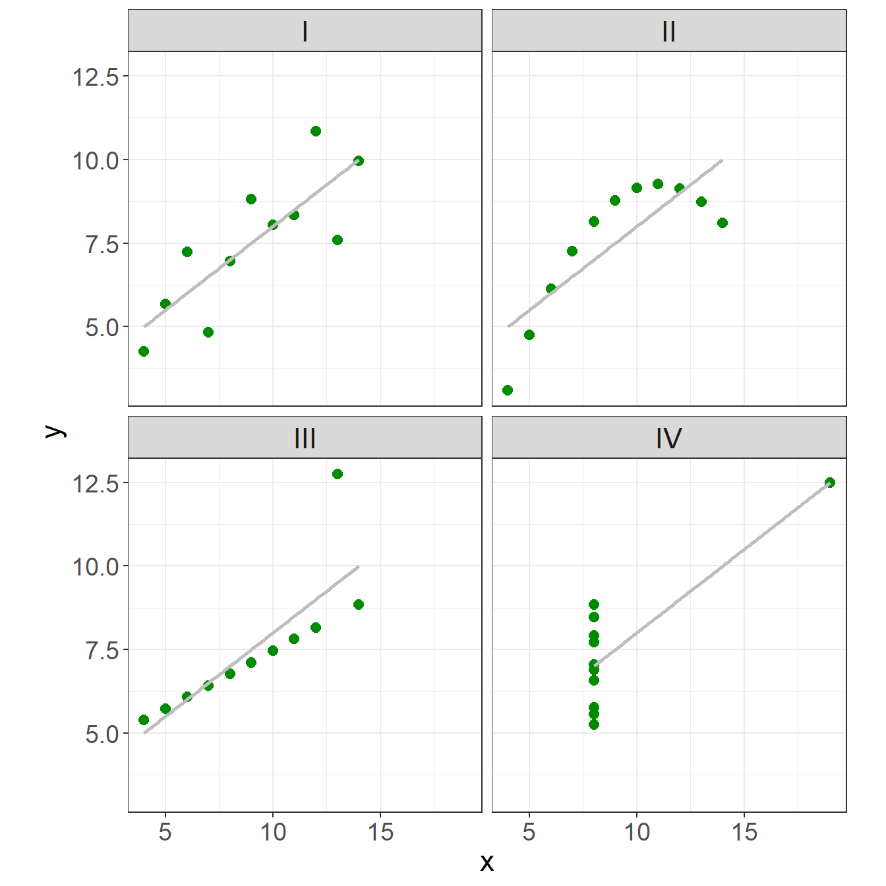
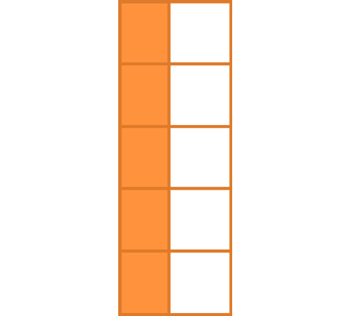

| x | y |
|---|---|
| 10 | 8.04 |
| 8 | 6.95 |
| 13 | 7.58 |
| 9 | 8.81 |
| 11 | 8.33 |
| 14 | 9.96 |
| 6 | 7.24 |
| 4 | 4.26 |
| 12 | 10.84 |
| 7 | 4.82 |
| 5 | 5.68 |
Data Visualization
Using ggplot2
BASICS
Why is data visualization important?
Exploratory Data Analysis (EDA)
Examples:
- Anscombe’s Quartet Exercise
Anscombe’s Quartet
4 data sets that have nearly identical simple statistical properties that appear very different when graphed
demonstrate both the importance of graphing data before analyzing it and the effect of outliers on statistical properties
11 (x,y) points
the same mean, median, standard deviation, and correlation coefficient between x and y
Anscombe’s Quartet: data
| x | y |
|---|---|
| 10 | 9.14 |
| 8 | 8.14 |
| 13 | 8.74 |
| 9 | 8.77 |
| 11 | 9.26 |
| 14 | 8.10 |
| 6 | 6.13 |
| 4 | 3.10 |
| 12 | 9.13 |
| 7 | 7.26 |
| 5 | 4.74 |
| x | y |
|---|---|
| 10 | 7.46 |
| 8 | 6.77 |
| 13 | 12.74 |
| 9 | 7.11 |
| 11 | 7.81 |
| 14 | 8.84 |
| 6 | 6.08 |
| 4 | 5.39 |
| 12 | 8.15 |
| 7 | 6.42 |
| 5 | 5.73 |
| x | y |
|---|---|
| 8 | 6.58 |
| 8 | 5.76 |
| 8 | 7.71 |
| 8 | 8.84 |
| 8 | 8.47 |
| 8 | 7.04 |
| 8 | 5.25 |
| 19 | 12.50 |
| 8 | 5.56 |
| 8 | 7.91 |
| 8 | 6.89 |
Anscombe’s Quartet: summary statistics
| I | II | III | IV | |
|---|---|---|---|---|
| mean(x) | 9 | 9 | 9 | 9 |
| sd(x) | 3.32 | 3.32 | 3.32 | 3.32 |
| mean(y) | 7.5 | 7.5 | 7.5 | 7.5 |
| sd(y) | 2.03 | 2.03 | 2.03 | 2.03 |
| cor(x,y) | 0.82 | 0.82 | 0.82 | 0.82 |
each data set has the same mean, standard deviation, and correlation coefficient between x and y.
Anscombe’s Quartet: plots

plot y versus x for each set with a linear regression trendline displayed on each plot:
This classic example really illustrates the importance of looking at your data, not just the summary statistics and model parameters you compute from it.
Data Types, Formats, and Structures
Data
Before it’s possible to talk about a graphical grammar, it’s important to know the type and format of the data you’re working with.
| Why? |
the data contains all of the information you’re trying to convey
the appropriate graphical techniques depend on the kind of data that you are working with
Working with R and ggplot is much easier if the data you use is in the right shape.
Data: levels of measurement
Quantitative:
- Continuous
- e.g. height, weight
- Discrete
- e.g. age in years
- e.g. age in years
Qualitative:
- Nominal
- categories have no meaningful order
- e.g. colors- Ordinal
categories have order but no meaningful distance between categories
e.g. five star ratings
Data: Dimensionality, Form, and Type
Dimensions
- Univariate
- 1 variable
- Bivariate
- 2 variables
- Multivariate
- 2+ variables
Forms
Traditional
Aggregated
Types
Count
Word Frequency
Sports Statistics
Time Series
Spatial
Time to Event
Survival
Reliability
Categorical
Exploring Relationships
- Continuous vs. Continuous
- scatter plot, line plot
- Continuous vs. Categorical
- boxplots, dotcharts, multiple density plots, violin plots
- Categorical vs. Categorical
- mosaicplots, side-by-side barplots
- Multidimensional
Resources
Formating your data
A tidy data discussion
Data format
Working with R and ggplot is much easier if the data you use is in the right shape.
Unlike base graphics, ggplot works with dataframes and not individual vectors.
All the data needed to make the plot is typically contained within the dataframe
ggplot expects your data to be in a particular sort of shape - “tidy data”
Same data, different layouts
Option 1:
| Name | Treatment A | Treatment B |
|---|---|---|
| John Smith | NA | 18 |
| Jane Doe | 4 | 1 |
| Mary Johnson | 6 | 7 |
Option 2:
| Treatment | John Smith | Jane Doe | Mary Johnson |
|---|---|---|---|
|
NA | 4 | 6 |
|
18 | 1 | 7 |
Option 3:
| Name | Treatment | Measurement |
|---|---|---|
| John Smith | A | NA |
| John Smith | B | 18 |
| Jane Doe | A | 4 |
| Jane Doe | B | 1 |
| Mary Johnson | A | 6 |
| Mary Johnson | B | 7 |
The data is the same, but the layout is different. Our vocabulary of rows and columns is simply not rich enough to describe why the two tables represent the same data. In addition to appearance, we need a way to describe the underlying semantics, or meaning, of the values displayed in the table
Wide Format vs. Long Format
Wide format
some variables are spread out across columns.
typically uses less space to display
how you would typically choose to present your data
far less repetition of labels and row elements

Long format
each variable is a column
each observation is a row
is likely not the data’s most compact form

Tidy Data

Tidy Data
Each variable is a column
Each observation is a row
Each type of observational unit forms a table
| Name | Treatment | Measurement |
|---|---|---|
| John Smith | A | NA |
| John Smith | B | 18 |
| Jane Doe | A | 4 |
| Jane Doe | B | 1 |
| Mary Johnson | A | 6 |
| Mary Johnson | B | 7 |
Messy data
Happy families are all alike; every unhappy family is unhappy in its own way. - Leo Tolstoy

Messy data
Happy families are all alike; every unhappy family is unhappy in its own way. - Leo Tolstoy
Five main ways tables of data tend not to be tidy:
Column headers are values, not variable names.
Multiple variables are stored in one column.
Variables are stored in both rows and columns.
Multiple types of observational units are stored in the same table.
A single observational unit is stored in multiple tables.
Tidy your data
data(french_fries, package = "reshape2")
head(french_fries)Wide Format:
| time | treatment | subject | rep | potato | buttery | grassy | rancid | painty |
|---|---|---|---|---|---|---|---|---|
| 1 | 1 | 3 | 1 | 2.9 | 0.0 | 0.0 | 0.0 | 5.5 |
| 1 | 1 | 3 | 2 | 14.0 | 0.0 | 0.0 | 1.1 | 0.0 |
| 1 | 1 | 10 | 1 | 11.0 | 6.4 | 0.0 | 0.0 | 0.0 |
| 1 | 1 | 10 | 2 | 9.9 | 5.9 | 2.9 | 2.2 | 0.0 |
| 1 | 1 | 15 | 1 | 1.2 | 0.1 | 0.0 | 1.1 | 5.1 |
| 1 | 1 | 15 | 2 | 8.8 | 3.0 | 3.6 | 1.5 | 2.3 |
Tidy your data
french_fries_long <- french_fries %>%
pivot_longer(cols = c("potato":"painty"), #<<
names_to = "variable", #<<
values_to = "value") #<<
head(french_fries_long)Long Format:
| time | treatment | subject | rep | variable | value |
|---|---|---|---|---|---|
| 1 | 1 | 3 | 1 | potato | 2.9 |
| 1 | 1 | 3 | 1 | buttery | 0.0 |
| 1 | 1 | 3 | 1 | grassy | 0.0 |
| 1 | 1 | 3 | 1 | rancid | 0.0 |
| 1 | 1 | 3 | 1 | painty | 5.5 |
| 1 | 1 | 3 | 2 | potato | 14.0 |
More on tidy data later!
Your turn!
experiment <- tibble(outcome = c("success", "failure"),
dog = c(15, 10),
cat = c(20, 12))
experiment# A tibble: 2 × 3
outcome dog cat
<chr> <dbl> <dbl>
1 success 15 20
2 failure 10 12To tidy the experiment table use pivot_longer() to create a long table.